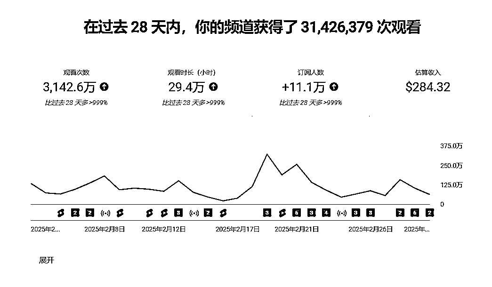
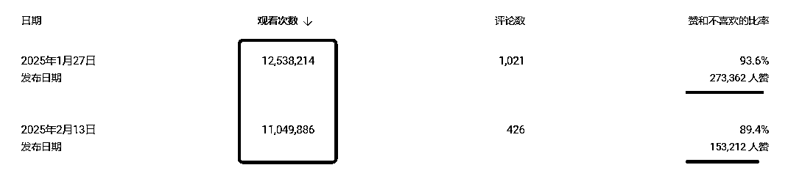
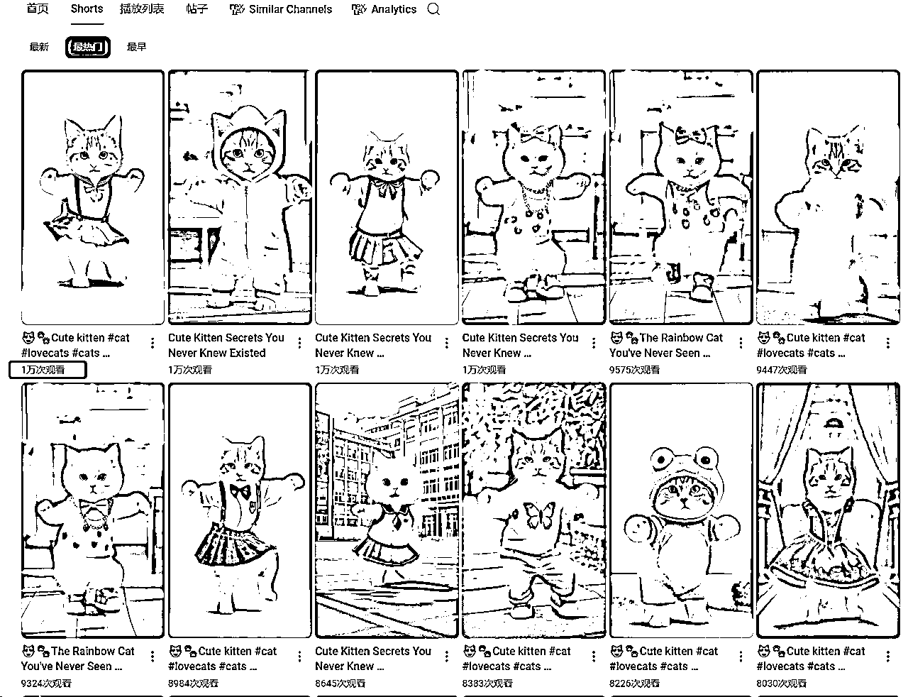
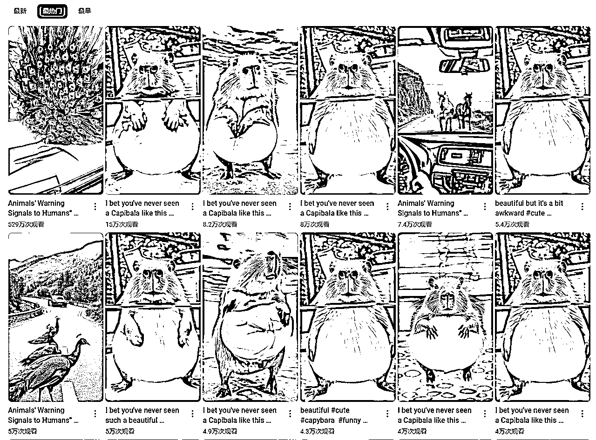
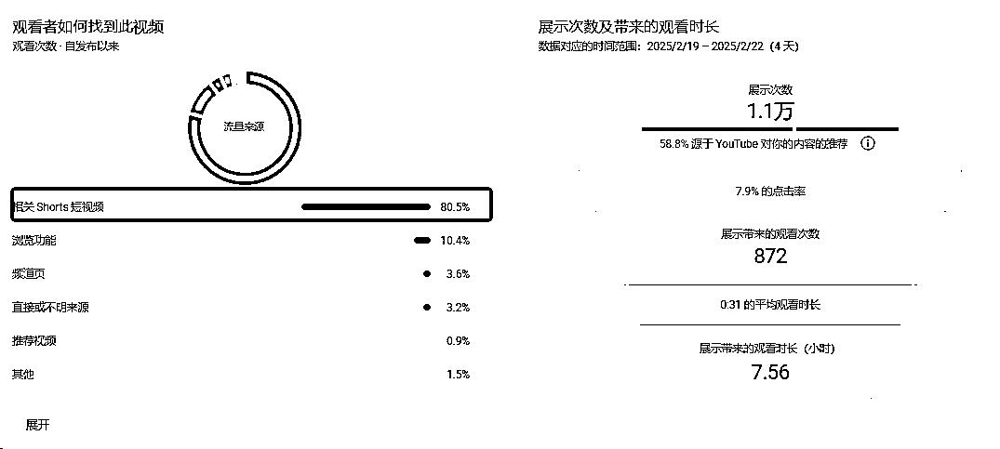
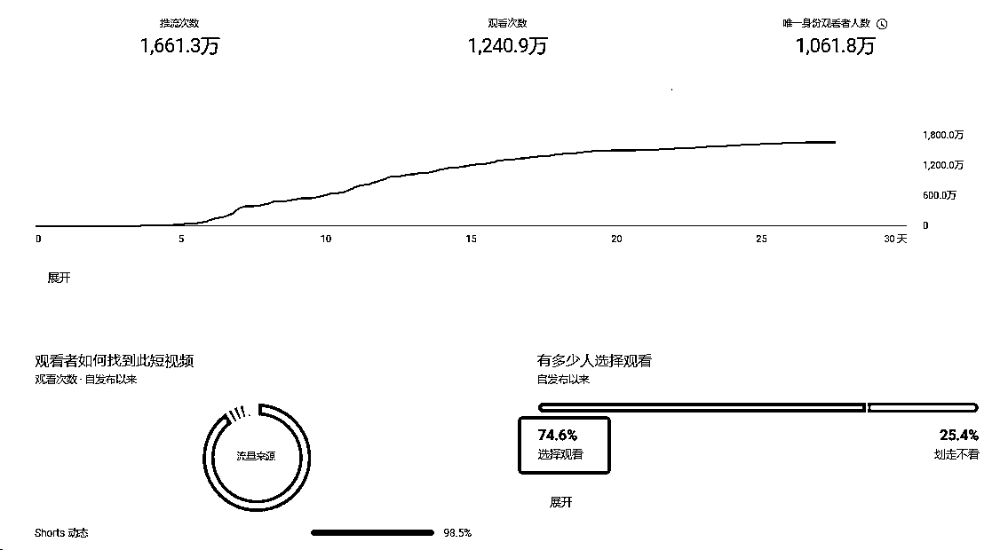
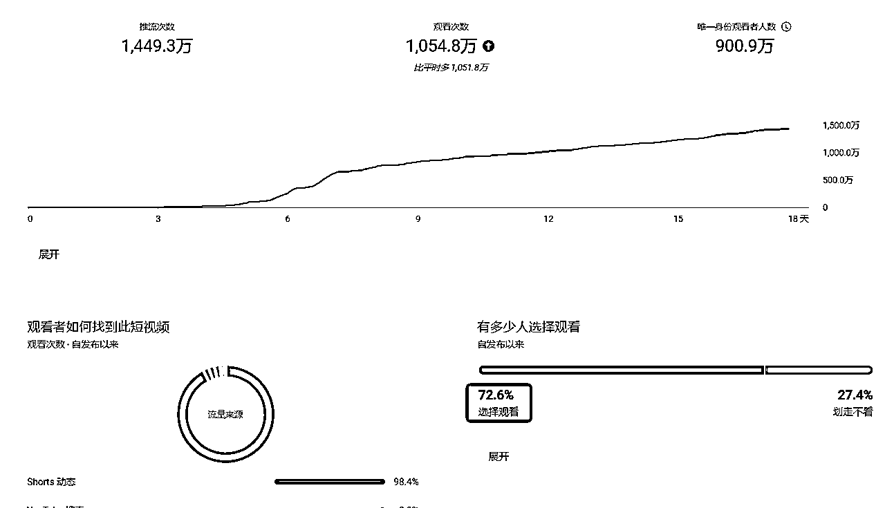

来源：https://ab7ctae1sc.feishu.cn/docx/OUG6dNBAlozotbxRN5lcTI3PnRS
大家好，我是As，目前的全职创业者，自参与2024年12月份的YouTube大航海以来，先后尝试了猫猫跳舞、治愈动物两个赛道，后来幸运被选入YouTube私教陪跑，在 和 教练的指导下选择了动物示警赛道，终于拿到了一些结果，目前已经开通了两个高级YPP账号和一个达标高级YPP数据的账号（一周内会申请开通），也达到了刚入私教陪跑时定下的目标。今天，我将结合我自身的经历，针对自己的YouTube之旅做一个简单的总结，也希望能给还在或者想进入这个赛道的圈友一些小小的启发。
截止目前，已经做出了两个千万爆款，顺利开通了高级YPP


国内平台分发YouTube视频，一鱼多吃也积累了一定的粉丝：
| 平台 | 账号创建日期 | 订阅 | 累计播放 | 累计变现 |
|---|---|---|---|---|
| 视频号 | 2025.1.20 | 4.8w | 1400w | 1400 |
| 快手 | 2025.1.20 | 3.3w | 1200w | 60 |
| 小红书 | 2025.1.20 | 2600 | 27w | 390 |
我的第一个赛道选择的是猫猫跳舞，刚入航海，信心满满，加之制作简单，3分钟一个，因此，在12月航海期内，我坚持不懈，坚信坚持就是胜利的道理，每天都准时发送一两条，但预期的爆款却迟迟没有到来，航海结束，只拿到了600个粉丝，最高播放量1w

然后我就开始思考，是不是赛道太过拥挤，因此，在继续坚持猫猫跳舞的前提下，我又瞄准了新的赛道--AI萌宠，当时这类视频在国内有很多爆款，我连续选择了小浣熊、卡皮巴拉，终于，在我发布第3个视频的时候，迎来了自己的第一个万播，达到了1.3w，当时开心坏了，下定决心要坚持下去。中间也坚持了一个月，有过一二十万的播放，但距离1000万播放还是遥遥无期。终于，在私教陪跑和 教练一对一咨询后，我还是战术放弃了这个赛道，原因主要有以下两点：

鱼丸发送的私教陪跑就像一束光给黑暗中的我指引了方向，收到消息后，我立马就填写了报名表，幸运的被选入私教陪跑。私教陪跑的内容比航海更细致、更深入，我花了一天的时间深入研究手册，学到了如何选择赛道、推流期的规律、播放数据的分析等等，全副武装的我在开了第一次启动会后的第二天，就发布了动物示警的第一个shorts。
刚开始是复刻爆款，在基本掌握了这类视频的制作方法后，考虑大家可能对标的爆款差不多，所有的动物感觉都是站起身拦车、努力扒拉前引擎盖，或者跳上引擎盖等，因此我开始尝试进行微创新，包括如下几点：
我目前测下来可以让流量更多的方法
我认为的爆款公式
(稀有动物 × 色彩对比) + (突发状况 × 情感共鸣) = 病毒传播
终于，我迎来了自己的第一个千万爆款，内容是多只孔雀拦路，孔雀开屏进行提醒。
基于私教陪跑手册中提到的观点：爆过的东西还会再爆，我对第一个千万爆款进行了小幅度的修改，在第二个分镜就进行孔雀开屏，迎来了自己的第二个千万爆款。
第一个千万爆款
第二个千万爆款
| 文生图（即梦） | 图生视频（可灵&智谱） | 备注 | |
|---|---|---|---|
| 分镜一 | 蜿蜒曲折的单车道山路上,三只孔雀背对镜头,站在马路的正中间，看着远方道路拐角处一辆驶来的白色的牧马人jeep汽车,道路两边有碎石和低矮的树木，远方是层峦叠嶂的山峰，风景优美，电影般的野生动物时刻,宁静而紧张的构图,逼真、阳光、明亮、清晰的视觉,尽可能多的细节,超高的图像质量,4K,在佳能a7c2上拍摄。 | 三只孔雀站在马路中间不断朝着汽车吼叫，一辆汽车快速向它们驶来，在它们面前来了个急刹车 | |
| 分镜二 | 汽车内视角，车前有三只孔雀挡住了前进的道路,道路右侧有碎石和低矮的树木，道路右侧是层峦叠嶂的岩石山峰，风景优美，电影般的野生动物时刻,宁静而紧张的构图,逼真、阳光、明亮、清晰的视觉,尽可能多的细节,超高的图像质量,4K,在佳能a7c2上拍摄。 | 镜头固定，两只孔雀朝着镜头方向快速走过来 | |
| 分镜三 | 特写镜头，牧马人jeep汽车正面视角，一只孔雀站在白色牧马人的前引擎盖,道路两边有碎石和低矮的树木，旁边是层峦叠嶂的岩石山峰，风景优美，电影般的野生动物时刻,宁静而紧张的构图,逼真、阳光、明亮、清晰的视觉,尽可能多的细节,超高的图像质量,4K,在佳能a7c2上拍摄。 | （智谱）一只未开屏的孔雀站立在地上，尾羽从闭合状态开始缓慢向上方和两侧展开，羽毛的金黄色虹彩光泽随展开动作产生流动效果，尾屏末端眼状斑纹在阳光下交替闪烁金色光芒，展开过程中尾屏直径从0.3米逐渐扩展至1.8米完整扇形。 | 孔雀开屏可能需要抽卡，也欢迎圈友分享提示词 |
| 分镜四 | 同分镜二 | 镜头固定，画面右侧的山坡发生了剧烈的山体滑坡,山上方的巨石滚落到马路上，冒出了滚滚浓烟,马路完全被岩石掩盖 |
更详细的专业制作攻略：
@逸凡风顺
陪跑进行到一半时，教练分享了私教陪跑新玩法，尝试了一下，效果很不错，在有一定的播放量后，我的账号很快就达到高级YPP的要求。
目前，动物示警赛道入局者也越来越多，同时也有很多的变体，还没有出爆款的圈友们可以继续尝试微创新，静待花开！
针对之前未进入这个赛道的新人，我的建议是前期复刻爆款，掌握制作方法后，尝试少见独特的动物、独特的拦路方式，动物示警依然有流量。或者尝试以下推荐的赛道：
我觉得短视频+长视频是目前关于YPP广告最好的变现方式。
shorts的流量导流效应
YouTube Shorts采用无限滑动推荐机制，爆款Shorts能快速吸引新观众并引导其进入频道主页或具体长视频链接，从而带动频道整体曝光。
YouTube的算法会优先推荐“高观看时长”的频道。虽然Shorts本身观看时长较短，但通过Shorts吸引用户进入频道主页后，观众可能点击观看长视频，从而提升频道的整体观看时长和推荐权重。
收益最大化的核心逻辑
Shorts制作成本低、传播效率高，能快速积累订阅者基数。而长视频的广告变现能力更强。因此，Shorts的核心价值在于为长视频积累流量池。
拿我自己的一个长视频举例，可以看到，长视频的流量来源80%都是来自于相关shorts短视频，因此，爆款shorts可以使长视频的收益达到最大化

https://www.viewstats.com/top-list?tab=videos&musicChannels=true&madeForKids=true&movies=true
https://labs.google/fx/tools/whisk


感谢生财提供的平台，感谢 Gary教练和 方波妮教练的悉心指导，感谢@七天老师对文章的建议和指导，也感谢很多圈友的无私分享，私教陪跑提供的赛道和专业的指导真的太好了。本来以为一个月内开通YPP是一个遥不可及的事情，真开通的那一刻，发现正确的选择真的比努力重要太多了。感谢我那一天的勇气填下了问卷，也感谢私教陪跑选择了我。
祝大家早日出爆款，早日开YPP，早日赚美金！